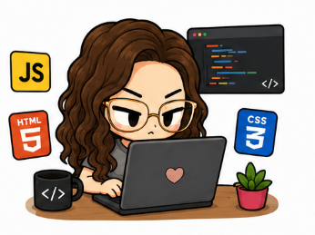

¿Cuál fue tu mayor reto al entrar al bootcamp?
21 de Julio, 2026
RESPUESTA DE CAROL PINEROS
¿Qué aprendiste de los juegos de rol que ponen a prueba las habilidades blandas?
21 de Julio, 2026
Los juegos de rol me hicieron caer en cuenta de que ser programador junior no se trata solo de saber código. Ahí puse en práctica cosas como la persistencia, la orientación al detalle, la mentalidad de crecimiento y la comunicación, y entendí que para las empresas estas habilidades blandas suelen pesar tanto —o más— que las técnicas. Es un aprendizaje que no esperaba encontrar en un bootcamp de programación, pero que ahora considero esencial.
Qué ha sido lo más difícil a nivel técnico hasta ahora?
21 de Julio, 2026
Lo más difícil ha sido lograr que HTML, CSS y JavaScript trabajen juntos de forma coherente dentro de un mismo proyecto. Cada lenguaje por separado se entiende relativamente rápido, pero complementarlos correctamente, sin que uno rompa lo que el otro construye, es donde realmente se pone a prueba lo aprendido.
¿Qué te ha dejado trabajar en equipo con tus compañeros?
21 de Julio, 2026
Trabajar en equipo me ha dejado la importancia de la buena comunicación y la escucha activa: entender las necesidades de mis compañeros y saber acoplarlas a las mías. Aprendí a participar siempre desde el respeto, entendiendo que un buen equipo se construye escuchando tanto como hablando.

¿Qué compañero o profesor te ha marcado en este proceso, y por qué?
Más que uno solo, todos mis compañeros han dejado huella en este proceso, cada uno motiva desde su propia perspectiva. Es muy satisfactorio ver el esfuerzo de cada quien desde su punto de partida, sin importar si tenía experiencia previa en programación o si, ,empezó desde cero.